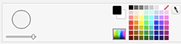

Adicione seus próprios passos
Quer adicionar você mesmo à dança?
Tire fotos de você mesmo realizando passos diferentes com uma parede branca no fundo.

Crie um novo ator fazendo o upload das fotos no Scratch:

Clique no botão de upload: 
Edite as fantasias usando o editor de desenho do Scratch.


Você pode ajustar o tamanho da borracha.
Clique na guia Fantasias.
Renomeie as fantasias para que elas sejam mais fáceis de lembrar.
Agora você está pronto para programar seus passos!
Clique na guia Scripts.
Crie um script de dança, como você fez com seu outro dançarino.

Quando estiver pronto, compartilhe sua dança.
Compartilhar sua dança